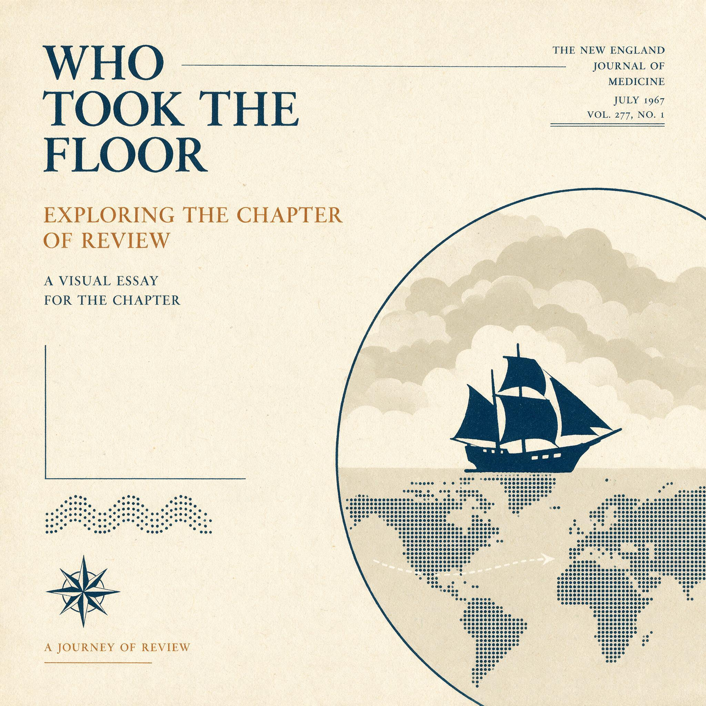

第 7 章
综述的旅行
1967年12月14日，糖业研究基金会华盛顿办公室的收发室归档了一份邮寄清单，清单上列着数百个名字：全科医生、内科医生、心脏病专家、医学院图书馆、政府卫生机构的官员。这份清单只是一

个分发工具，它规划着一条让一份特定文献抵达全美医学界办公桌的路线。
同一天，一只牛皮纸信封被贴上邮票，寄往爱荷华州得梅因市的一位全科医生。信封里装着一份单行本，封面印着《新英格兰医学杂志》的刊名和卷期号，标题是《膳食脂肪与碳水化合物对动脉粥样硬化的影响》。附上的便条措辞礼貌而专业，说这是近期发表的一篇重要综述，“希望对您的临床实践有所帮助”。这只信封只是其中一只。同一周，数百只同样的信封从华盛顿寄出。
“成功地塑造了讨论的框架”——这句话，写在一份内部备忘录里，不是对外的宣传材料。它精确地概括了基金会传播策略的目标。他们不是要买通科学家，不是要伪造数据，不是要压制育克金的论文。他们要做的是确保在心脏病学界的每一次重要会议上，脂肪假说都有一个声音——一个由基金会资助的、有顶级期刊综述背书的、用清晰有力的语言讲述的声音。
他们不阻止育克金发言，不阻止他发表论文，不阻止他的支持者在会议上提问。但他们确保育克金的声音被淹没在同一场会议上更大的声音里。那个更大的声音，有赞助的卫星研讨会，有五千份单行本的分发，有在顶级期刊上发表的综述。育克金的声音，只有他自己。
1969年，美国心脏协会的营养委员会在制定最新的饮食建议时，引用了哈佛综述。委员会的报告发表在《循环》杂志上，这是心脏病学领域的顶级期刊。报告在“膳食脂肪”一节中写道：“大量流行病学和临床证据表明，膳食中的饱和脂肪摄入量与血清胆固醇水平及冠心病的发生率呈正相关。”这句话后面跟了一个括号，括号里列了十几篇参考文献，哈佛综述排在第三位。育克金的论文没有被引用。
委员会成员做出这个判断时，是否注意到哈佛综述的资助来源？报告上没有写。利益冲突声明制度要到1984年才会建立。没有人要求委员会成员披露他们参考的文献是否接受了产业资助。他们只是在做所有科学委员会都会做的事：检索文献，评估证据，形成共识。
但文献的可用性本身已经被基金会的分发策略预先塑造了。哈佛综述出现在委员会成员的办公桌上，出现在他们检索的参考文献列表里，出现在他们同行的演讲幻灯片里。育克金的论文也在，但需要花更多力气才能找到，需要花更多篇幅才能说服委员会认真对待。
委员会选择了他们认为最有说服力的证据。这个选择本身是诚实的。但诚实的选择发生在一个已经被选择过的文献池里。
这篇报告发表后，《纽约时报》的健康专栏写了一篇报道，标题是《心脏专家重申脂肪警告》。
报道引用了美国心脏协会的报告，说“权威研究表明，减少饱和脂肪摄入是预防心脏病的最有效饮食措施”。报道没有提到糖。记者在写稿时，打电话给美国心脏协会的公关部门，要了一份“背景资料”。
公关部门给他寄了委员会报告的单行本，以及一份“常见问题解答”清单。清单上第一个问题是：“糖和心脏病有关吗？”答案是：“目前的证据不支持糖作为心脏病的主要膳食风险因素。”这个答案的依据，部分是哈佛综述。
不是糖业研究基金会直接告诉记者的，是美国心脏协会告诉记者的。而美国心脏协会的依据，部分是被基金会放大过的科学叙事。链条的每一个环节都在正常运转：记者引用协会，协会引用委员会报告，委员会报告引用综述，综述引用被选中的研究。
没有人需要说谎。没有人需要刻意隐瞒。但链条的起点——那篇综述的资助来源和选择框架——在每一个环节都在变得更模糊。它没有被擦除，它只是没有被提及。这就是议程捕获的扩散机制。
它不发生在综述被接受的瞬间，而发生在综述被引用、被援引、被新闻稿翻译成通俗语言、被临床医生转化成饮食建议的每一个后续环节。每一次引用，都让综述的产业痕迹变得更淡，让它的论断变得更像“科学共识”，让质疑它的声音变得更像“非主流意见”。
引用链越长，源头越模糊。糖业研究基金会不需要在每一个环节施加影响。他们只需要在起点完成一次推动——让一篇受资助的综述发表在顶级期刊上，然后把它印成五千份单行本，寄到全美医生的诊室里，赞助几场卫星研讨会。
之后的事情，正常的科学传播过程会替他们完成。期刊会引用它，医学会会采用它，媒体会报道它，医生会相信它。所有这些行动都发生在正常的、合法的、甚至是诚实的制度运作之内。但制度的正常运作，发生在一个已经被产业资金预先倾斜的场地上。
1970年，斯泰尔在美国营养学会的年度会议上发表了演讲。会议在华盛顿举行。基金会档案里有一份差旅报销单，列着斯泰尔的机票、酒店和餐费，总计四百八十七美元。
报销单上有一栏“演讲主题”，斯泰尔填的是“膳食脂肪与冠心病：证据综述”。基金会的项目主管在报销单上签了字，旁边加了一句手写批注：“斯泰尔博士的演讲再次巩固了我们的立场。”这场演讲的听众包括来自政府机构、学术机构和食品行业的营养专业人员。
其中一位是农业部营养研究所的科学家，她后来在制定1977年《美国膳食目标》时担任了技术顾问。另一位是食品药品监督管理局的官员，正在参与一项关于食品标签中营养声明的新规起草。还有一位是《消费者报告》杂志的编辑，正在策划一期关于“健康饮食”的封面故事。
斯泰尔用幻灯片展示了哈佛综述的核心图表——那张比较脂肪摄入与冠心病死亡率相关性的散点图，那张在不同国家之间画出一条上升趋势线的图。他没有展示育克金那张同样显示糖摄入与冠心病死亡率存在相关性的散点图。不是因为育克金的数据不存在，而是因为斯泰尔的综述框架不要求他展示对立假说的证据。
他的综述是一篇叙事综述——一篇受资助的非系统性文献综述，通过选择性地组织已有研究来构建有利于资助方的科学叙事。他选择了对脂肪假说有利的证据，把糖假说放在“需要更多研究”的那一小节里，用一句话带过。
这不是错误的。这是在科学综述的合法范围内，选择性地构建一个叙事。议程捕获的微妙之处就在这里。
它不需要资助方告诉科学家该写什么。它只需要资助方选择支持哪一类科学家、哪一类研究问题、哪一类综述框架。一旦选择做出，正常的科学过程就会接管。科学家会忠实地完成综述，期刊会忠实地审稿，医学会会忠实地评估证据，媒体会忠实地报道。
但所有这些“忠实”都发生在一个已经被选择过的轨道上。这个轨道不是糖业铺设的，但糖业为它提供了初始动力，并持续确保它不会被偏离。
1971年，基金会印发了五千份单行本的第二次印刷。订单编号是SRF-71-2138，印数同样是五千份，但分发策略有所调整。
基金会档案里的一份内部备忘录显示，这次分发的重点对象是“正在参与制定膳食指南的政策顾问”。备忘录里列了一份“优先分发名单”，包括：美国农业部营养政策顾问委员会的所有成员，美国心脏协会营养委员会的所有成员，国家科学院食品与营养委员会的成员，以及参议院营养与人类需要特别委员会的幕僚。备忘录的执笔人写道：“这些人在未来几年内将做出或影响与膳食指南相关的关键决定。确保他们手中有我们的综述，是我们的首要任务。”
这份名单上的人，后来确实成为了1977年《美国膳食目标》制定过程中的关键角色。他们中的一些人在档案里留下的证词中提到，他们在准备膳食建议时，依赖的主要科学依据之一就是美国心脏协会的报告，以及发表在那份报告之前的哈佛综述。
他们不知道这份综述的资助来源。他们只是把它当作一份正常的科学文献来引用。但基金会知道。
1971年，当这份综述被装入信封，寄给这些政策顾问时，它已经不仅是一篇学术论文了。它是一份被精心分发、精准投放的“教育材料”。糖业研究基金会用了四年时间，把一篇受资助的综述，从印刷机里的一摞纸，变成了一份在医学界和政策界被反复引用的“科学共识”。
这个过程并非秘密进行。基金会的年度报告公开列出了他们的“教育材料分发”项目，包括综述单行本的分发数字。但没有人会去读一份糖业行业协会的年度报告，除非他是糖业协会的会员。
科学家们读的是《新英格兰医学杂志》，不是糖业报告。记者们读的是美国心脏协会的新闻稿，不是基金会档案。
公众读到的是《纽约时报》的健康专栏，不是分发名单。信息的传播链条是透明的，但信息的来源链条在每一个环节都在变得模糊。
育克金在1972年出版了一本书，书名是《纯净、白色和致命》。这本书用通俗语言向普通读者论证了糖与心脏病、糖尿病、龋齿等疾病的关系。它在英国出版，销量不错，被翻译成多种语言，但在美国，它的影响力远不如一篇被美国心脏协会引用的综述。
不是因为育克金的书缺乏证据，而是因为育克金的书没有进入美国医学协会的引用网络，没有被美国心脏协会列入参考文献，没有出现在国会议员的政策简报里。育克金的书被放在书店的“健康”类书架上，而哈佛综述被放在政策顾问的办公桌上。书架和办公桌之间的距离，就是议程捕获的扩散机制在起作用。
这种机制不是阴谋。它不需要阴谋。它只需要资金、组织和耐心。糖业研究基金会花了四年时间，用五千份单行本、两千五百美元的卫星研讨会、数百个信封和一张政策顾问名单，完成了一次传播工程。他们不是收买结论，而是购买注意力。
这只信封的寄件人地址栏里，印着“糖业研究基金会，华盛顿哥伦比亚特区，西北区K街1730号”。那是一个普通的商业地址，和当时华盛顿许多行业协会的办公室在同一栋楼里。信封上贴的是一张6美分的普通邮票，上面印着富兰克林·罗斯福的头像。收件人地址是手写的，笔迹工整但谈不上漂亮，像是一个常年处理大量邮寄事务的行政助理的手笔。地址是：爱荷华州得梅因市，榆树街1427号，约翰·M·安德森医生收。
安德森医生是一位全科医生，在得梅因郊区开了一间私人诊所，每天处理感冒、高血压、糖尿病和病人偶尔的焦虑。他从来没有在医学期刊上发表过论文，从来不会被邀请到美国心脏协会年会上发言，从来不会声称自己是心脏病学专家。但他每天都会告诉病人该吃什么、不该吃什么。
他的建议，部分来自医学院的教科书，部分来自《美国医学会杂志》上偶尔读到的综述，部分来自药厂销售代表留在诊室门口的小册子。1967年12月18日，他收到了这封信。
基金会档案里保留着这份邮寄清单的完整副本。清单是一叠连续打印的电脑纸，两侧有穿孔的孔眼，用的是上世纪六十年代IBM大型机常用的那种宽行打印机。每个名字前面有一个编号，名字后面跟着地址、专业类别和“分发数量”一栏。安德森医生的名字出现在第147行，分发数量是“1”。
清单上还有一些名字后面的数字是“5”或“10”——那些通常是医学院图书馆的采购负责人或者大型教学医院的科室主任，他们会把单行本放在阅览室或分发给住院医师。分发数量最多的是“50”，对应的是几位在心脏病学领域有影响力的专家，他们被标注为“关键意见领袖”，基金会会在后续的邮件中询问他们是否愿意在会议上引用这篇综述，或者是否愿意将其列为自己课程的推荐阅读材料。但安德森医生只在“1”那一栏里。基金会不需要他去影响任何人。
只需要他读到这篇综述，在脑子里把“脂肪危险”这个等式再加固一次，在下一次有病人问他“我是不是该少吃点糖”的时候，他回答：“目前的证据更支持减少脂肪。”这句话不是糖业研究基金会教他说的。他们不需要教他。他们只需要把一篇综述寄到他手里，确保这篇综述的语言足够清晰、足够权威，让他能在诊室里复述给自己的病人。
安德森医生不是糖业议程的传播者，他是糖业议程的终点。他不需要成为演说家，他只需要成为信徒。
但这张清单还透露了更多的东西。清单底部的“印制说明”一栏写着：“本批印刷：5000册。印刷商：哥伦比亚印刷公司，华盛顿特区。纸张：80磅铜版纸，封面覆膜。总费用：$1,247.50。”
基金会档案里还保留着哥伦比亚印刷公司开具的发票原件。发票日期是1967年11月29日，比邮寄日期早了两周。发票上详细列出了费用明细：排版费$85，制版费$120，印刷费$675，装订费$212.50，覆膜费$85，运费$70。发票备注栏里有一行手写字：“单行本封面按《新英格兰医学杂志》原版样式制作，保留刊名和卷期号。”
这行备注很重要。它意味着基金会刻意保留了单行本与原始期刊的视觉连续性。任何一个收到单行本的医生，看到的封面都和《新英格兰医学杂志》的正式封面别无二致——同样的刊名，同样的卷期号，同样的页码。唯一不同的是，单行本封底没有期刊的广告页，取而代之的是一行小字：“本文由糖业研究基金会提供教育资助。”
这行小字的存在，在法律上构成了免责声明，在伦理上构成了透明披露。但任何一个在诊室里收到这封邮件、匆匆翻阅的医生，有多少人会注意到封底那行小字？
基金会的传播策略不是建立在隐瞒之上，而是建立在认知带宽的有限性之上。他们知道医生很忙，知道他们不会逐字逐句读封底，知道他们更关心正文里的图表和结论性句子。他们不是要欺骗，他们只是不主动提醒。
在这份邮寄清单和发票之间，还有一份文件把这两者连接起来。那是一份基金会内部的“项目执行备忘录”，日期是1967年12月4日，由基金会项目主管约翰·希克斯签署。备忘录的标题是：“哈佛综述分发计划——第一阶段”。正文第一段写道：“随附的邮寄清单已经过三重交叉核对，确保覆盖全美所有执业内科医生、心脏病专家和医学教学机构的核心成员。
本次分发的目标是让这篇综述在1968年第一季度之前，进入全美医学界的核心引用网络。”备忘录的第二段列了三个“关键指标”：第一，邮寄后六个月内，至少有三篇独立发表的论文引用这篇综述；第二，至少有一家主要医学会议的议程中，出现引用这篇综述的演讲；第三，至少有一篇全国性媒体的健康报道提及这篇综述的结论。
备忘录的结尾写道：“我们不对这些指标做强制性干预，但会通过后续的‘教育材料分发’和‘卫星研讨会赞助’来创造实现这些指标的有利条件。”这句话是整份备忘录里最关键的句子。
“不对指标做强制性干预”——他们不要求任何人引用，不要求任何人演讲，不要求任何人报道。他们只做一件事：创造有利条件。创造有利条件，意味着他们把综述印成五千份，寄到医生手里，赞助研讨会，给演讲者付差旅费。这一切都是合法的，都是透明的，都是科学传播的正常组成部分。
他们不是阻止育克金发声，而是确保脂肪假说的声音比他大。当科学批评还在酝酿时，当育克金还在为他的反驳收集更多的流行病学数据时，当独立研究者还在审慎地评估双方证据时，这篇综述已经完成了它的旅行——从印刷机到诊室，从诊室到医学会议，从医学会议到引用网络，从引用网络到政策简报，从政策简报到那些即将决定全国膳食指导方向的人手中。
1973年，参议院营养与人类需要特别委员会的主席乔治·麦戈文，开始为一项全国性的膳食政策寻找科学依据。他的幕僚收集了美国心脏协会、美国营养学会、农业部等机构提交的建议。在这些建议的参考文献里，哈佛综述被反复引用。麦戈文委员会的成员们读到这篇综述时，看到的是“在新英格兰医学杂志上发表的权威综述”，不是“受糖业研究基金会资助的叙事综述”。他们不知道糖业在这篇综述里扮演了什么角色。他们也不知道，他们即将启动的听证会，将决定未来半个世纪的膳食指导方向。
那个听证会，将是一个没有糖假说代表出席的听证会。育克金没有被邀请。
他的论文没有被列入委员会的技术报告。糖业不需要阻止他出席。议程捕获已经完成了它的工作。脂肪假说已经占据了政策辩论的起点位置。糖假说——即使它可能值得被认真对待——已经被排除在“主流科学看法”之外，不需要任何一条法律来禁止它出场。只需要一篇综述被印成五千份，寄到该寄的人手里，被反复引用，被翻译成新闻稿，被写进政策简报，被放在听证会桌上。当麦戈文委员会翻开第一份技术简报时，这篇综述已经在那里了。